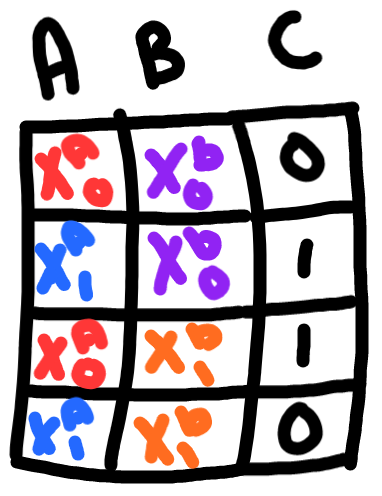
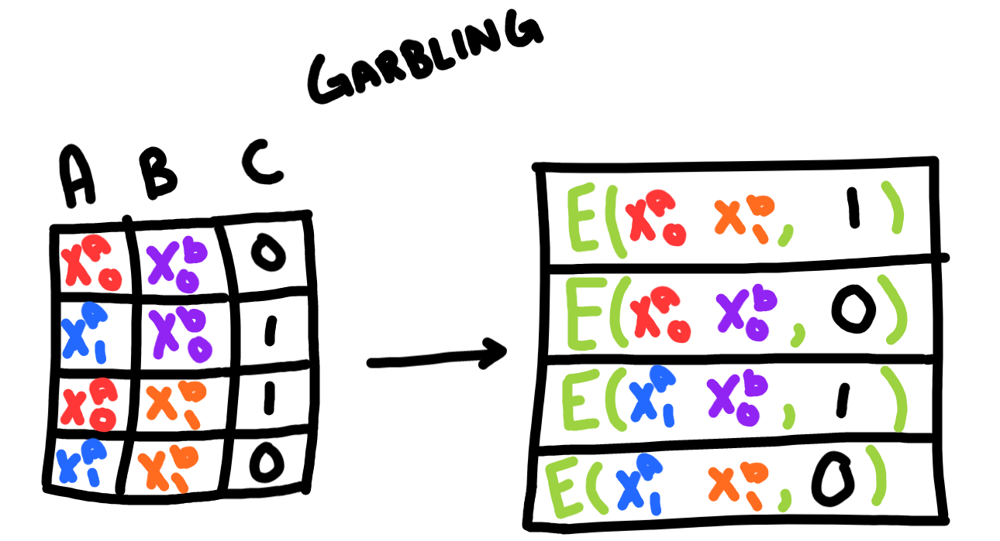
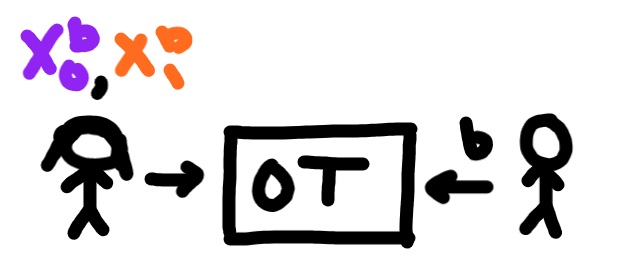
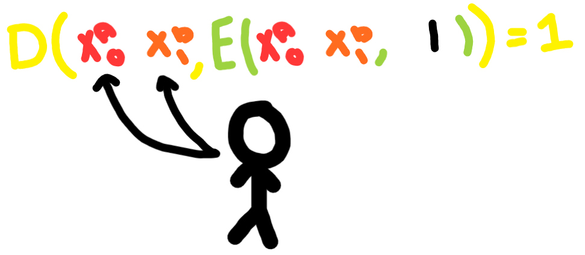

Introduction to Yao’s Garbled Circuits
Yao’s Garbled Circuits is a cryptographic protocol introduced by Andrew Yao in 1982 that enables secure two-party computation. It allows two parties, let’s call them Alice and Bob, to compute a function on their private inputs without revealing their inputs to each other.
How it works
Yao’s Garbled Circuits is a form of MPC where there are only two parties and each party is assumed to be “honest-but-curious” meaning that they might try and look at things they shouldn’t, but they won’t actively try and break the protocol. The participants are trying to compute the function \(f(x, y)\) which is a boolean circuit meaning that all inputs are 0 or 1 and there are nodes like AND, OR, and NOT gates that connect inputs. The function is known to both parties, but they don’t want to reveal their inputs to each other. The protocol works as follows:
- Alice and Bob agree on a boolean circuit \(f(x)\) that they want to compute
- Alice garbles the circuit and sends it along with her encrypted input \(x0\) to Bob
- Bob encrypts his input \(x1\) by using an Oblivious Transfer protocol with Alice
- Bob evaluates the garbled circuit with his encrypted input and sends the result to Alice
Lets go through each of these steps in more detail.
In this example, we are going to compute the function \(f(x, y) = x \oplus y\), where \(\oplus\) represents the XOR operator. Alice has input \(x = 1\), and Bob has input \(y = 0\). The first step is to agree on a boolean circuit that computes \(f(x, y)\).

Then, Alice generates a key for each wire and each possible value for the wire. In this case, there are two wires, and each wire can be 0 or 1, so there are four keys.

Alice encrypts each output value with the corresponding keys and permutes the table randomly. Then she sends the garbled circuit to Bob along with her encrypted input \(x_0\).

Bob uses an Oblivious Transfer protocol to select which key he wants from alice. 
Since Bob now has Alice’s key and the key for his own input, he can decrypt the output value and send it to Alice. Bob either has to go through every entry in the table and try to decrypt it or there can be a select bit specified in the protocol so he knows where to look. Bob then sends the output value to Alice.

Multi Gate Circuits
For multi-gate circuits, instead of calculating the encryption directly on the function output, the garbler will also generate a key for the output and encrypt that key instead. When Bob decrypts the circuit, he will get the output key, which can be fed into other circuits.
Applications
Yao’s Garbled Circuits find applications in various scenarios where privacy and secure computation are paramount. Some of the applications include:
Privacy-preserving auctions: Garbled circuits can be used to compute auction algorithms securely, allowing bidders to submit their bids without revealing their values until the auction winner is determined.
Secure machine learning: Yao’s Garbled Circuits can enable privacy-preserving machine learning models by allowing different parties to compute machine learning algorithms on their private data without revealing the data itself.
Private function evaluation: The protocol enables secure computation of functions on private inputs, which is useful in scenarios where mutually distrusting parties need to jointly compute a function without revealing their inputs.
Conclusion
Yao’s Garbled Circuits provide a powerful tool for secure two-party computation, enabling privacy-preserving computations between mutually distrusting parties. The protocol ensures that each party’s inputs remain confidential while computing a joint function. By following the steps of garbling and evaluation, Alice and Bob can securely compute a function without exposing their inputs to each other.
In this blog post, we explored the concept of Yao’s Garbled Circuits, the underlying mechanisms, and its applications. By understanding and implementing protocols like Yao’s Garbled Circuits, we can achieve privacy-preserving computations in various domains.